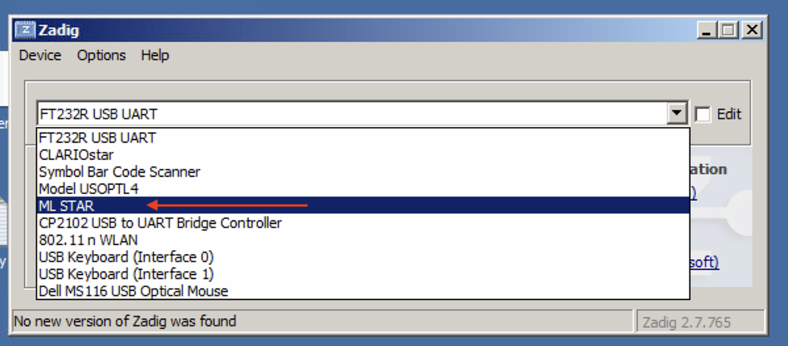
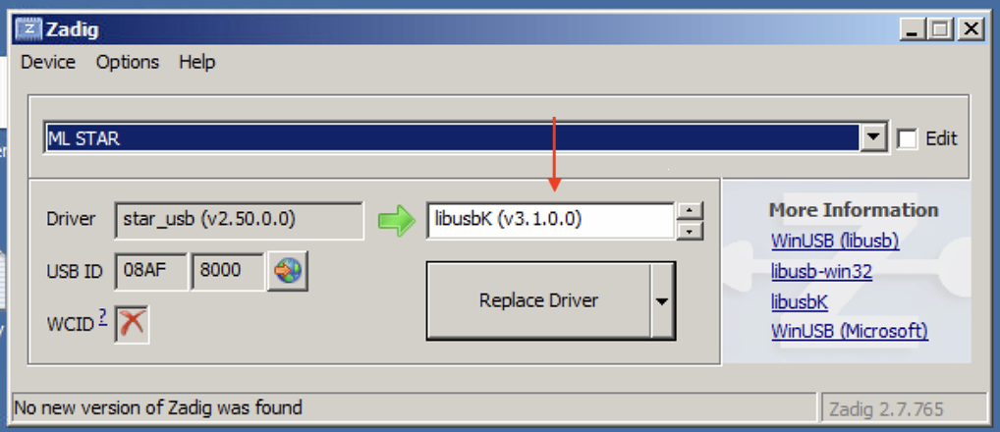
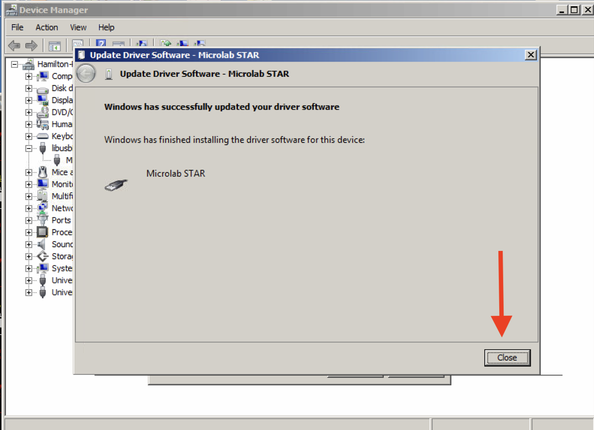

Installation#
These instructions describe how to install PyLabRobot.
Note that there are additional installation steps for using the USB interface to Hamiltons and Tecans, see below.
Installing PyLabRobot#
It is highly recommended that you install PyLabRobot in a virtual environment rather than using system python.
Here’s how to create a virtual environment using venv:
mkdir your_project
cd your_project
python -m venv env
source env/bin/activate # on Windows: .\env\Scripts\activate
From PyPI#
This is the recommended way to install PyLabRobot. It is the easiest and most stable way to get started.
The following will install PyLabRobot:
pip install pylabrobot
If you want to use PLR on physical hardware, you need install the additional dependencies for those. See the example below for how to install the dependencies for the USB interface:
pip install "pylabrobot[usb]"
You can install multiple dependencies at once by separating them with a comma:
pip install "pylabrobot[serial,usb]"
Different machines use different communication modes. Replace [usb] with one of the following items to install the desired dependencies. Find specific information for the machines you are using on their respective documentation pages.
Group |
Packages |
When you need it |
|---|---|---|
|
pyserial |
Serial devices: e.g. BioShake, Cytomat, Inheco (serial mode), Hamilton Tilt Module, Cole Parmer Masterflex, A4S Sealer, XPeel Peeler |
|
pyusb, libusb-package |
USB devices: e.g. Hamilton STAR/STARlet, Tecan EVO (firmware) |
|
pylibftdi, pyusb |
FTDI devices: e.g. BioTek Synergy H1 plate reader |
|
hid |
HID devices: e.g. Inheco Incubator/Shaker (HID mode) |
|
pymodbus |
Modbus devices: e.g. Agrow Pump Array |
|
opentrons-http-api-client |
e.g. Opentrons backend |
|
numpy (1.26), opencv-python |
e.g. Cytation imager |
|
zeroconf, grpcio |
SiLA devices |
|
microscopy + sila |
ImageXpress Pico microscope |
|
All of the above + testing/linting tools |
Development |
Or install all dependencies:
pip install 'pylabrobot[all]'
Microscopy is not included in the all group because it requires an older version of numpy. If you want to use microscopy features, you need to install those dependencies separately through pip install "pylabrobot[microscopy]".
From source#
You can install PyLabRobot from source. This is particularly useful if you want to contribute to the project or if you want to use the latest features that haven’t been released on PyPI yet.
git clone https://github.com/pylabrobot/pylabrobot.git
cd pylabrobot
pip install -e ".[dev]"
This will install PyLabRobot in editable mode, which means that any changes you make to the source code will be reflected in your environment without needing to reinstall. It will also install all the dependencies needed for development, testing and building documentation. See above for more information on the different dependency groups.
See CONTRIBUTING.md for specific instructions on testing, documentation and development.
Using the USB interface#
If you want to use the firmware version of the Hamilton or Tecan interfaces, you need to install a backend for PyUSB. You can find the official installation instructions here. The following is a complete (and probably easier) guide for macOS, Linux and Windows.
First, install the USB dependencies:
pip install pylabrobot[usb]
On Linux#
You should be all set!
On Mac#
You need to install libusb. You can do this using Homebrew:
brew install libusb
Warning
People have reported issues with not being able to find the machine on macOS 15 Sonoma. No solution to this is currently known. See this thread.
On Windows#
Installing#
Download and install Zadig.
Make sure the Hamilton is connected using the USB cable and that no other Hamilton/VENUS software is running.
Open Zadig and select “Options” -> “List All Devices”.

Select “ML Star” from the list if you’re using a Hamilton STAR or STARlet. If you’re using a Tecan robot, select “TECU”.

Select “libusbK” using the arrow buttons.

Click “Replace Driver”.

Click “Close” to finish.

Uninstalling#
These instructions only apply if you are using VENUS or another vendor software on your computer!
If you ever wish to switch back from firmware command to use pyhamilton or plain VENUS, you have to replace the updated driver with the original Hamilton or Tecan one.
This guide is only relevant if ML Star is listed under libusbK USB Devices in the Device Manager program.

If that”s the case, double click “ML Star” (or similar) to open this dialog, then click “Driver”.

Click “Update Driver”.

Select “Browse my computer for driver software”.

Select “Let me pick from a list of device drivers on my computer”.

Select “Microlab STAR” and click “Next”.

Click “Close” to finish.

Troubleshooting#
If you get a usb.core.NoBackendError: No backend available error: this may be helpful.
If you are still having trouble, please reach out on discuss.pylabrobot.org.
Cytation imager#
In order to use imaging on the Cytation, you need to:
Install python 3.10
Download Spinnaker SDK and install (including Python) https://www.teledynevisionsolutions.com/products/spinnaker-sdk/
Install numpy==1.26 (this is an older version)
If you just want to do plate reading, heating, shaknig, etc. you don’t need to follow these specific steps.